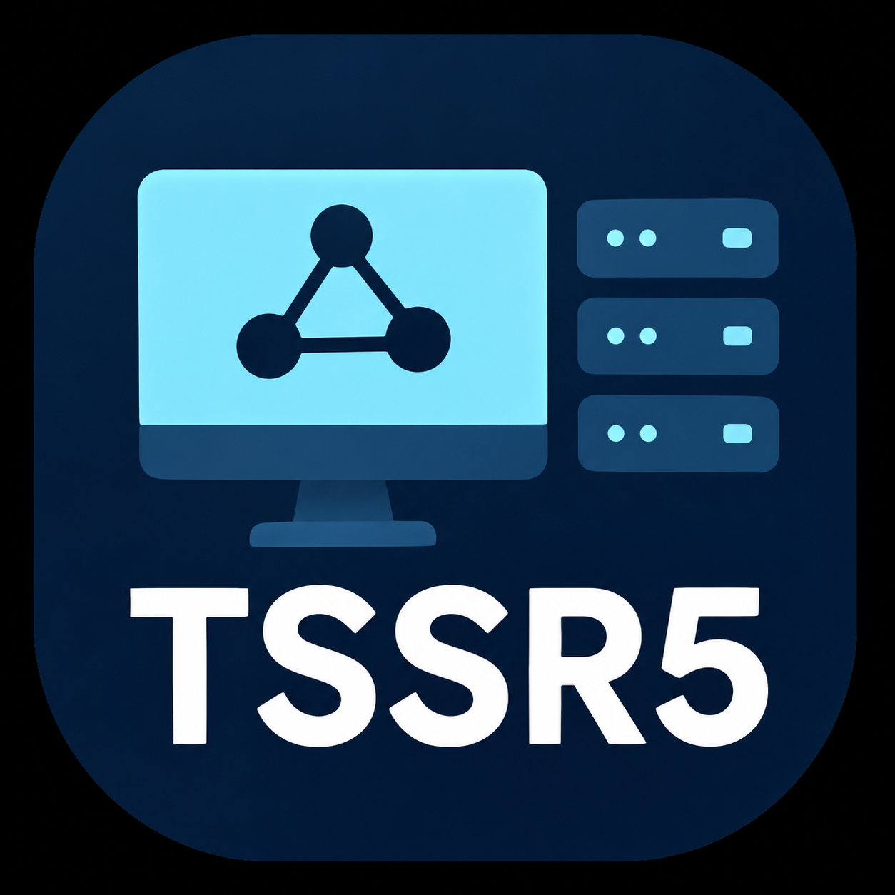
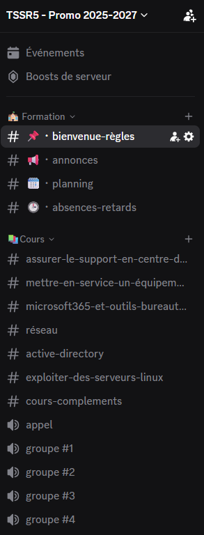
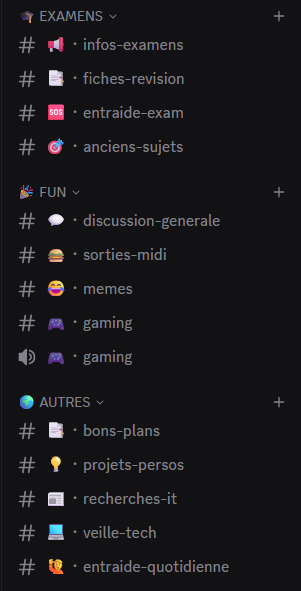
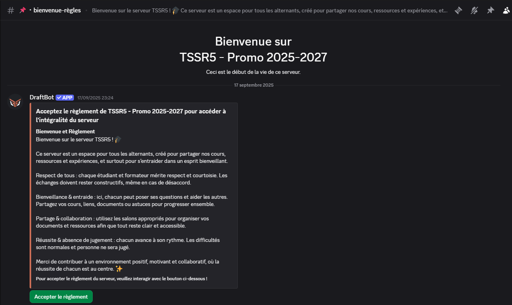

Création d'un serveur Discord
TSSR5 — Promotion 2025–2027
Projet réalisé · Septembre 2025Présentation du projet
En septembre 2025, j'ai créé un serveur Discord destiné à ma promotion TSSR 2025–2027, par intérêt pour les outils collaboratifs et l'organisation d'espaces numériques.
L'objectif était de disposer d'un espace commun pour faciliter les échanges, permettre le partage d'informations et de ressources entre camarades, et encourager l'entraide.
Organisation du serveur
J'ai structuré le serveur en plusieurs catégories et salons afin d'organiser les échanges selon les besoins de la promotion.
Formation
Règlement, annonces, planning, absences et retards.
Cours
Salons dédiés aux matières techniques : réseaux, Linux, Active Directory, Microsoft 365 et autres sujets de formation. Des salons vocaux permettent aussi les échanges en groupe.
Examens
Informations sur les examens, fiches de révision, entraide et anciens sujets.
Fun
Discussions générales, sorties, memes et gaming.
Autres
Bons plans, projets personnels, recherches IT, veille technologique et entraide quotidienne.


Mise en place de DraftBot
J'ai configuré DraftBot pour afficher un message de bienvenue et présenter le règlement du serveur aux nouveaux membres.
Ce message contient un bouton interactif « Accepter le règlement ». Lorsqu'un membre clique dessus, DraftBot lui attribue automatiquement le rôle « membre règlement » .
Fonctionnement du bot
Le membre rejoint le serveur, consulte le message de bienvenue, puis peut accepter le règlement à l'aide du bouton prévu.
L'attribution automatique du rôle permet de distinguer les membres ayant accepté le règlement et d'automatiser cette étape de l'accueil.

Gestion des invitations et des accès
Le serveur TSSR5 est configuré en mode privé, avec un accès sur invitation uniquement.
Les nouveaux membres doivent disposer d'un lien d'invitation pour rejoindre l'espace de la promotion.
Les invitations permettent de rejoindre le serveur. L'acceptation du règlement est ensuite gérée séparément grâce à DraftBot.
Bilan du projet
Aujourd'hui, le serveur est principalement utilisé pour discuter entre camarades, avec quelques partages ponctuels de ressources.
Même si son utilisation est surtout orientée vers les échanges quotidiens, il constitue un espace commun pour la promotion.
Ce projet m'a permis de mettre en pratique mon intérêt pour la création et l'organisation d'un espace collaboratif, de découvrir les paramètres d'accès d'un serveur Discord et de configurer un bot pour automatiser une partie de l'accueil des membres.